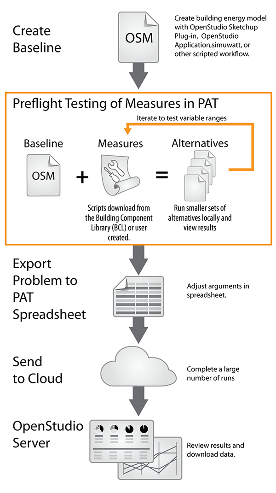
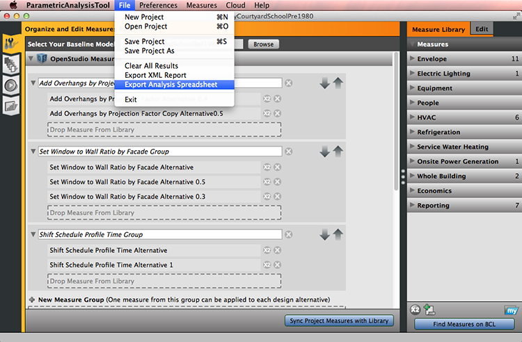
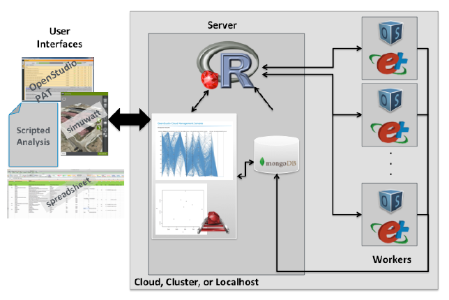

Large Scale Analysis
Although building energy modeling has been common for many years, large-scale analyses have more recently become achievable for more users with access to affordable and vast computing power in the cloud. Recently, the OpenStudio Parametric Analysis Tool was enhanced, allowing users to launch their own cloud resources to run a large number of simulations.
The Parametric Analysis Tool (PAT) now exports a spreadsheet format compatible with the OpenStudio-analysis-spreadsheet project for running large parametric analyses using cloud resources.
Go to the GitHub repository for information and code for the analysis spreadsheet. There are instructions and examples on the GitHub site.
The Workflow
- Build your baseline model with the OpenStudio Application
- Manipulate the Model with measures
- Run basic parametrics via PAT
- Export a spreadsheet view from PAT
- Fill in ranges, distributions, defaults, algorithms, objective functions
- Large Analyses via OpenStudio-Server
- Start Cluster
- Upload Data:
- Measures
- Variables
- Seed Model
- Weather Data
- Simulation Executive Runs Analysis
- Browse Results and Download Files
- Everything has a JSON-based API to access data programmatically
- Download results in CSV or R dataframe

Starting OpenStudio's Cloud
gem install bundler
git clone https://github.com/NREL/OpenStudio-analysis-spreadsheet.git
bundle install
Export Spreadsheet
Select the measures you want to use in the analysis and export a spreadsheet by selecting that option under the File menu. 
Edit the Template Spreadsheet
After exporting the spreadsheet from PAT, open the spreadsheet in Excel to edit fields.
{kind=link}
Above: Click to see a larger screenshot of the spreadsheet.
Running OpenStudio's Cloud
rake run
Buildings Specific Chef Cookbooks
Provisioning ensures that the appropriate tools are ready on the server, that there are consistent images across platforms, and makes it easier to test and deploy.
The OpenStudio Server uses Chef to help automate the workflow. Chef Documentation
OpenStudio - https://github.com/NREL-cookbooks/openstudio
EnergyPlus - https://github.com/NREL-cookbooks/energyplus
Radiance - https://github.com/NREL-cookbooks/radiance
R - https://github.com/NREL-cookbooks/cookbook-r
Server Architecture

Publications
A GRAPHICAL TOOL FOR CLOUD-BASED BUILDING ENERGY SIMULATION (PDF)
SCALING BUILDING ENERGY MODELING HORIZONTALLY IN THE CLOUD WITH OPENSTUDIO (PDF).